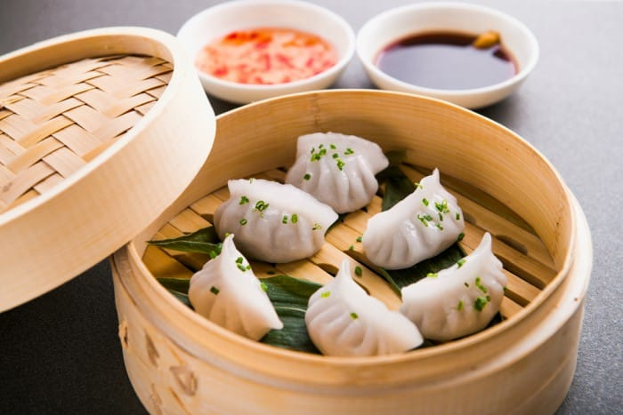

"Unveiling Flavors Through Time: The Epic Saga of Dim Sum"
Dim Sum, a Chinese culinary tradition, originated over a thousand years ago along the Silk Road. Initially, it was roadside tea stalls offering snacks for weary travelers. Over time, it evolved into a diverse array of bite-sized dishes, often served in bamboo steamers, enjoyed with tea. Introduced to the West in the mid-1800s, it gained worldwide popularity. Dim Sum encompasses dumplings, buns, rolls, and more, reflecting China's rich culinary heritage.
"Bringing Dim Sum to your kitchen"
Making dim sum at home can be a fun and delicious endeavor. Here's a basic recipe for homemade pork dumplings, a popular type of dim sum:
Elevate Your Dish with Exceptional Ingredients
For the Dumpling Filling:
- 1/2 pound (225 grams) ground pork
- 1/2 cup finely chopped Napa cabbage
- 2-3 green onions, finely chopped
- 1 clove garlic, minced
- 1 teaspoon fresh ginger, minced
- 1 tablespoon soy sauce
- 1 teaspoon sesame oil
- 1/2 teaspoon sugar
- Salt and pepper to taste
For the Dumpling Wrappers:
- Dumpling or gyoza wrappers (you can buy them pre-made at an Asian grocery store)
Let's chop, simmer, and sauté our way to gastronomic glory!
Prepare the Dumpling Filling:
1. In a mixing bowl, combine the ground pork, chopped Napa cabbage, green onions, minced garlic, minced ginger, soy sauce, sesame oil, sugar, salt, and pepper. Mix well until all the ingredients are thoroughly combined.
Assemble the Dumplings:
1. Place a small amount (about a teaspoon) of the filling in the center of a dumpling wrapper.
2. Moisten the edges of the wrapper with a little water.
3. Fold the wrapper in half to create a half-moon shape, and press the edges together to seal. You can create pleats along the edge for a decorative touch if you like.
4. Repeat this process until you've used all the filling and wrappers.
Cook the Dumplings:
1. There are a few methods to cook dumplings:
- Steaming: Place the dumplings in a steamer lined with parchment paper or cabbage leaves, making sure they don't touch each other. Steam for about 15-20 minutes until the dumplings are cooked through and the wrappers are translucent.
- Boiling: Bring a pot of water to a boil. Drop the dumplings into the boiling water and cook until they float to the surface. Boil for an additional 2-3 minutes, then remove with a slotted spoon.
- Pan-frying (Potstickers): Heat a skillet with a couple of tablespoons of oil over medium-high heat. Place the dumplings in the skillet and cook until the bottoms are golden brown. Then, add about 1/2 cup of water, cover, and steam for about 5 minutes until the water is absorbed and the dumplings are cooked through.
Serve:
1. Serve the dumplings hot with a dipping sauce made from soy sauce, rice vinegar, and a touch of sesame oil, garnished with chopped green onions or sesame seeds.
2. Enjoy your homemade dim sum!
Feel free to customize the filling with ingredients like shrimp, mushrooms, or tofu, and get creative with your dipping sauce for a personalized dim sum experience.